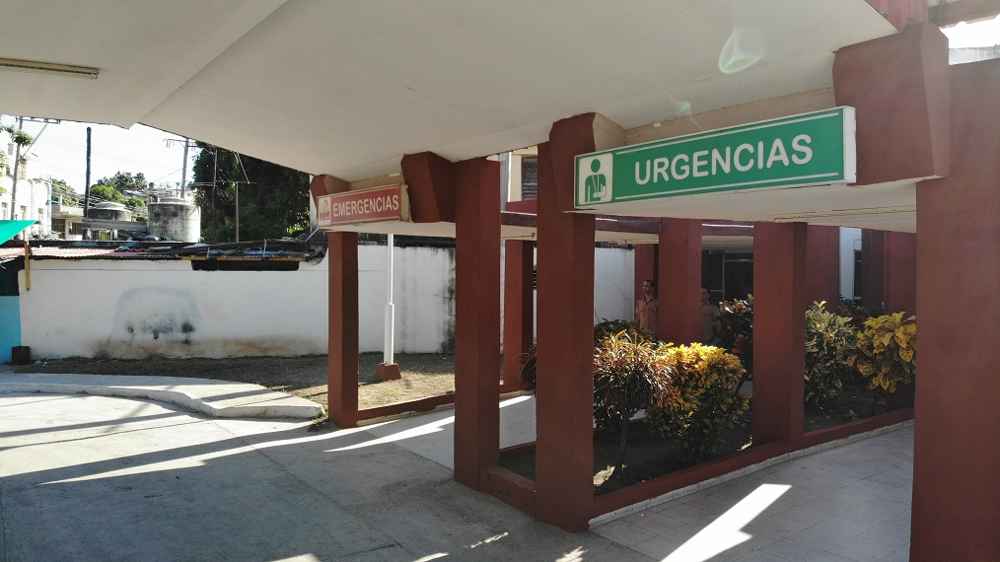

Compromiso con la transparencia, el humanismo y la calidad asistencial. Información clara para pacientes, familiares y acompañantes.
Fundado el 7 de enero de 1963, es un centro de referencia que brinda servicios de salud a militares, sus familiares y a la población civil del área de salud de Santiago de Cuba.
Garantizar una adecuada atención médica a la población santiaguera, brindando asistencia médica secundaria a militares, familiares y pacientes regionalizados con los más altos estándares de calidad.
Ser un referente nacional en asistencia médica, docencia e investigación científica, manteniendo altos estándares de calidad y humanismo en cada servicio.
Humanismo, sensibilidad, rigor, sentido de pertenencia y profesionalidad. Nos distinguimos por el compromiso y el cariño que proveemos a nuestros pacientes.
Información oficial para pacientes ingresados y acompañantes. Conozca sus responsabilidades y garantías dentro de nuestra institución.
Todo paciente tendrá derecho a:
Todo paciente tendrá el deber de:
Todo acompañante tendrá los siguientes derechos:
Todo acompañante tendrá el deber de:
Imágenes de nuestras instalaciones y servicios.

Documento oficial con la normativa completa:
📥 Descargar PDF OficialTestimonios que reflejan la calidad humana y profesional de nuestra institución.
El servicio de oxigenación hiperbárica del hospital me salvó la vida. La atención y el cariño del personal fueron increíbles. No tengo palabras para agradecer a todo el equipo de salud.
Mi familia y yo recibimos un trato excepcional durante la hospitalización de mi padre. El personal demostró profesionalidad y mucho humanismo en cada momento.
Su opinión es importante para seguir mejorando. Envíenos sus sugerencias, preguntas o comentarios.
Santiago de Cuba, Cuba
Dr. Joaquín Castillo Duany
Orden Carlos Juan Finlay (2022)